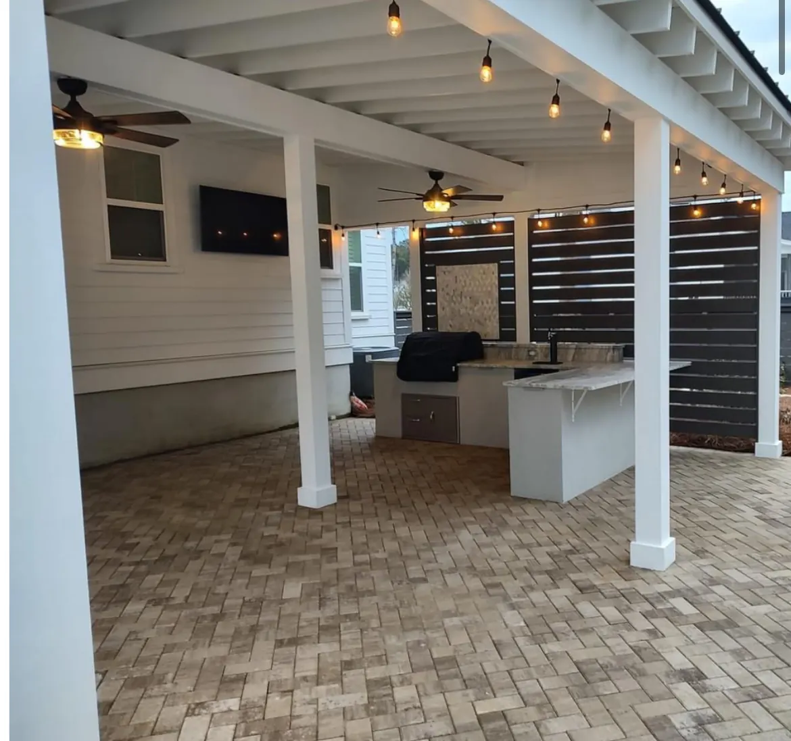
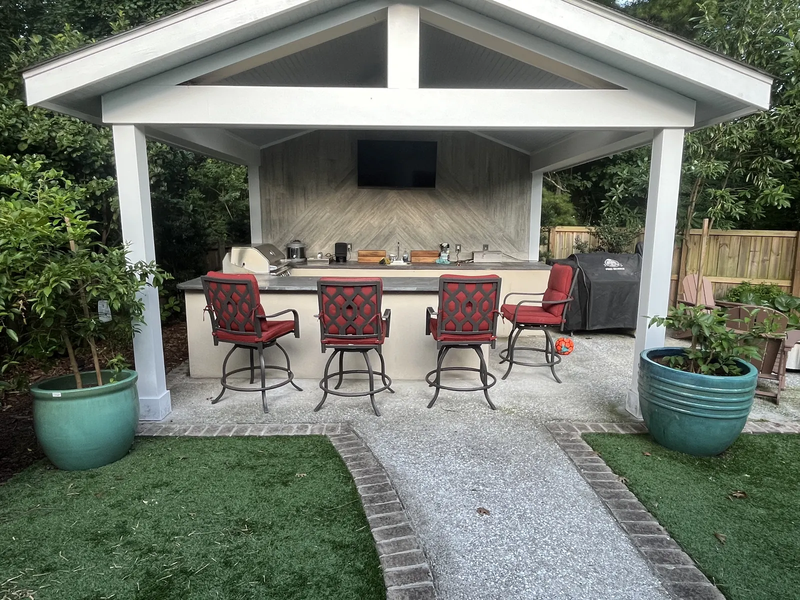

Mount Pleasant, SC Landscapes & Hardscapes

Landscaping
Mount Pleasant, SC

Cramers Landscaping proudly serves the Mount Pleasant community with full-service landscape design, installation, and maintenance. Whether you’re in I’On, Carolina Park, Old Village, or any of the area’s growing neighborhoods, our team delivers high-quality, tailored solutions that enhance the beauty, function, and value of your property.
Our services are designed to support the needs of homeowners, developers, rental property owners, and commercial properties alike. With deep knowledge of the local environment and unmatched craftsmanship, we help Mount Pleasant landscapes thrive year-round.
Elevating

Outdoor Spaces in Mount Pleasant
Mount Pleasant is one of the Lowcountry’s most desirable places to live, known for its master-planned communities, waterfront views, and family-friendly neighborhoods. But maintaining a landscape in this region comes with its own unique challenges—from fast-draining sandy soils to salt-tolerant plant requirements, HOA guidelines, and long growing seasons.
Cramers Landscaping understands how to navigate those challenges while creating timeless, low-maintenance landscapes that align with your lifestyle and design preferences.
Our team works on a variety of property types, including:
- Custom homes and new builds
- Short-term rentals and investment properties
- Townhomes and residential developments
- HOA-maintained communities
- Commercial and mixed-use spaces
Our Landscaping
Services in Mount Pleasant
We provide a complete suite of landscaping solutions that can be tailored to any property or budget.
Tailored for
Landscape Installation

Start fresh with turf, trees, beds, and seasonal color designed to perform well in Mount Pleasant’s hot, humid conditions.
Hardscape Installation

Add patios, walkways, and retaining walls to increase usable space, reduce erosion, and add architectural interest to your landscape.
Irrigation Systems Installation

Smart irrigation systems protect your investment and keep lawns, beds, and trees thriving. We install drip, spray, and weather-synced systems for precise water management.
Drainage & Grading

Combat runoff and wet spots common in clay-heavy or sloped areas. Our drainage solutions improve lawn health and reduce standing water.
Landscape Maintenance

We offer routine maintenance plans tailored to busy families and second homeowners, including mowing, trimming, and irrigation checks.
Tree & Shrub Trimming

Keep your trees healthy, safe, and well-shaped with expert pruning, canopy elevation, and storm damage cleanup.
Mulching & Bed Maintenance

Refresh your beds with pine straw, bark mulch, or stone, including weed barrier installation and bed edging for clean lines.
Landscape Enhancements

Want to add curb appeal or update a tired bed? We offer quick enhancements that make a big impact—from lighting to seasonal installs.
Site Structures

Install pergolas, fences, or patio roofs that transform your outdoor space into a true extension of your home.
Mount Pleasant Neighborhoods
We regularly work in high-end neighborhoods where expectations are high and landscapes are part of the home’s first impression. Our team is familiar with HOA requirements and architectural review boards across communities like:
- I’On
- Carolina Park
- Dunes West
- Old Village
- Oyster Point
- Rivertowne
- Belle Hall
- Hamlin Plantation
- Seaside Farms
We help homeowners submit plans when needed and ensure our designs fit within community guidelines.
Sustainable

1 / 2 2 / 2
2 / 2Low-Maintenance Landscaping

In Mount Pleasant, many homeowners prioritize smart, low-maintenance landscapes that hold up to year-round use. We design with this in mind by incorporating:
- Native and drought-tolerant plants
- Mulch for moisture retention and weed control
- Smart irrigation systems with zone control
- Sod types like Zoysia and Bermuda for optimal sun tolerance
- Drip systems for beds and root-specific watering
- Long-lasting hardscape materials like pavers and stone
Our goal is to build a space you love—with less work and greater peace of mind.
Ideal for
Rental and Vacation Properties
Mount Pleasant is a growing area for both short-term and long-term rentals. We help property owners create landscapes that are beautiful, functional, and low-maintenance—perfect for reducing upkeep between guest stays or tenant turnovers.
We provide:
- Set-it-and-forget-it irrigation systems
- Durable, well-draining turf and mulch
- Easy-care native plant layouts
- Ongoing maintenance contracts for property managers
Serving the
Greater Mount Pleasant Area

Our local crews serve every major part of Mount Pleasant, including:
- North Mount Pleasant (Park West, Carolina Park)
- South Mount Pleasant (Old Village, Shem Creek)
- Midtown and Rifle Range corridor
- Dunes West and Rivertowne
- Long Point, Belle Hall, and Hamlin
Don’t see your neighborhood? Contact us to confirm we serve your area.
Combine Landscaping Services

for Maximum Impact
We often bundle services for clients looking to complete projects efficiently and cohesively. The most common pairings in Mount Pleasant include:
- Landscape Installation + Irrigation
- Hardscape Installation + Drainage & Grading
- Tree Trimming + Mulching
- Maintenance + Enhancements
We also offer phased plans if you want to build in stages—ideal for homeowners budgeting across seasons or property managers balancing multiple upgrades.
Frequently Asked Questions
Ready to
Do you provide free estimates in Mount Pleasant?
Yes. We offer free on-site quotes for all properties in Mount Pleasant and surrounding areas.
Are your crews licensed and insured?
Absolutely. We are fully licensed and insured for residential and commercial landscape work in South Carolina.
Do you install irrigation systems for HOA properties or commercial buildings?
Yes. We install and maintain commercial-grade systems for townhomes, retail centers, and residential developments.
Can you help me refresh an existing design without starting over?
Yes. We specialize in enhancements that reuse existing beds, improve layouts, or incorporate new materials for a cleaner, more modern look.
Explore Everything We Build
From plantings and drainage to patios, pergolas and outdoor kitchens, see the full range of services we offer in Mount Pleasant and across the Lowcountry.
Upgrade Your Landscape?
We don’t just create beautiful landscapes—we create long-lasting partnerships with our clients. Whether you're managing a residential home, new construction, rental property, or commercial site, Cramers Landscaping is the name Charleston trusts for quality, care, and results.
Contact us today to schedule a consultation and see why more homeowners and builders are choosing Cramers Landscaping.